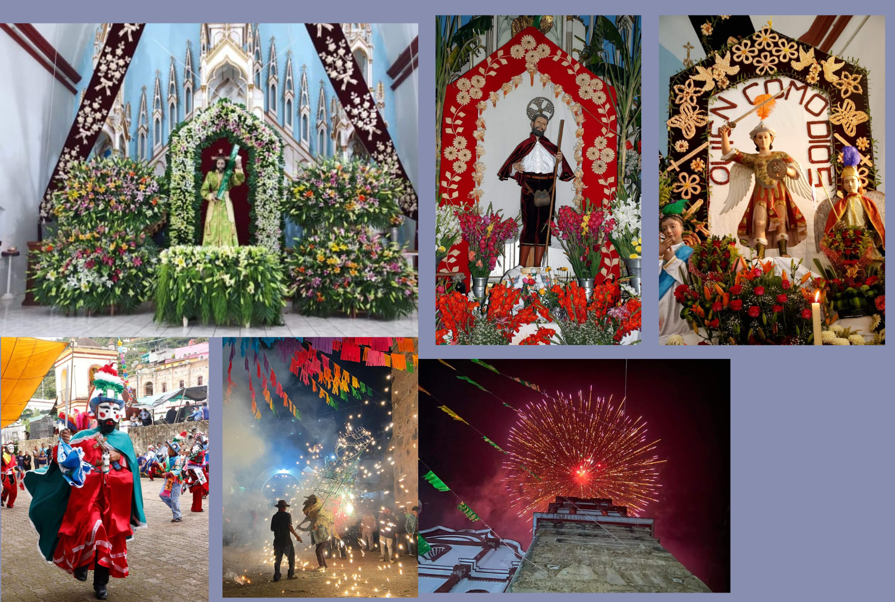
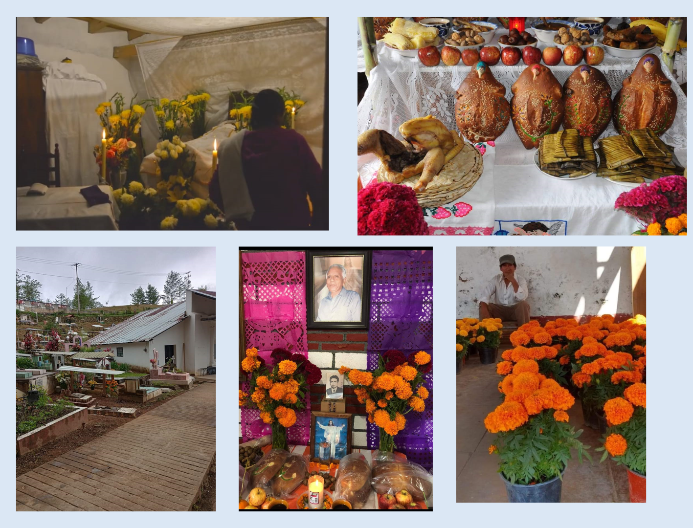

TRADICIONES:
FESTIVIDADES: El tercer domingo de enero se festeja el Dulce Nombre de Jesus, el 29 de septiembre se celebra la fiesta patronal en honor a San Miguel Arcángel, el 15 de mayo en honor San Isidro Labrador, patrón de los campesinos. Las actividades de las fiestas, día de calenda (Aspecto cultural) A las 12 horas del día se da la bienvenida a las bandas filarmónicas visitantes que alegraran la festividad a celebrar, con un discurso oficial a nombre del pueblo, autoridades municipales y fuerzas vivas de la población, a las 4 horas de la tarde da inicio la calenda florar con el camión alegórico que lleva a un niño que representa a la imagen que se le rinde honor, con acompañamiento de las bandas filarmónicas de la comunidad, bandas visitantes y pueblo en general, recorriendo la población por las calles principales. En esta calenda concursan las mejores canastas florales, de regreso se lleva a cabo un programa sociocultural preparado por la juventud, comité, casas del pueblo y alumnos de los diferentes niveles educativos de la localidad; a las nueve de la noche se inicia la calenda nocturna con la participación de las bandas filarmónicas de la comunidad y visitantes recorriendo las principales calles de la población, deleitando con sus sones y jarabes regionales, desde luego, no falta la participación de la chirimia de lante de los músicos en todo el recorrido.

BUNIHWEH: Su significado del nombre es persona enferma . Es una tradición de nuestros antepasados , que la noche del primero de noviembre se les tiene que entonar cantos a nuestros fieles difuntos , para esto los organizadores de esto conforman 8 grupos los cuales se reúnen en la iglesia o en el panteón dependiendo de quién lo organize, en donde el sacerdote bendice a esos grupos y de ahí parten a los domicilios o las casas. El encabezado al llegar a la casa o domicilio , bendice el altar con todo respeto y se hace una oracion , despues de estos se entonan los cantos a los fieles difuntos; al culminar se vuelve a bendecir el altar y todos se retiran con mucho respeto.Después de la media noche se hace un rezo especial para cambiar de cantos , es en donde pueden entonar cantos en latín , como lo son : el critus factus , deprofundis y el miserere . Al culminar la noche , se concentran los 8 grupos en el panteón municipal , para entonar todos los cantos que se entonaron durante la noche a los difuntos olvidados , es un lugar especial que el panteón tiene y lo representa en una cruz , y es así como termina el recorrido.
